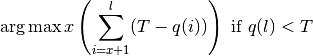

RTG Command Reference¶
This chapter describes RTG commands with a generic description of parameter options and usage. This section also includes expected operation and output results.
Command line interface (CLI)¶
RTG is installed as a single executable in any system subdirectory where permissions authorize a particular community of users to run the application. RTG commands are executed through the RTG command-line interface (CLI). Each command has its own set of parameters and options described in this section. The availability of each command may be determined by the RTG license that has been installed. Contact support@realtimegenomics.com to discuss changing the set of commands that are enabled by your license.
Results are organized in results directories defined by command
parameters and settings. The command line shell environment should
include a set of familiar text post-processing tools, such as grep,
awk, or perl. Otherwise, no additional applications such as
databases or directory services are required.
RTG command syntax¶
Usage:
rtg COMMAND [OPTIONS] <REQUIRED>
To run an RTG command at the command prompt (either DOS window or Unix terminal), type the product name followed by the command and all required and optional parameters. For example:
$ rtg format -o human_REF_SDF human_REF.fasta
Typically results are written to output files specified with the -o
option. There is no default filename or filename extension added to
commands requiring specification of an output directory or format.
Many times, unfiltered output files are very large; the built-in
compression option generates block compressed output files with the
.gz extension automatically unless the parameter -Z or --no-gzip
is issued with the command.
Many command parameters require user-supplied information of various types, as shown in the following:
| Type | Description |
|---|---|
| DIR, FILE | File or directory name(s) |
| SDF | Sequence data that has been formatted to SDF |
| INT | Integer value |
| FLOAT | Floating point decimal value |
| STRING | A sequence of characters for comments, filenames, or labels |
To display all parameters and syntax associated with an RTG command,
enter the command and type --help. For example: all parameters
available for the RTG format command are displayed when rtg format
--help is executed, the output of which is shown below.
Usage: rtg format [OPTION]... -o SDF FILE+
[OPTION]... -o SDF -I FILE
[OPTION]... -o SDF -l FILE -r FILE
Converts the contents of sequence data files (FASTA/FASTQ/SAM/BAM) into the RTG
Sequence Data File (SDF) format.
File Input/Output
-f, --format=FORMAT format of input. Allowed values are [fasta,
fastq, sam-se, sam-pe, cg-fastq, cg-sam]
(Default is fasta)
-I, --input-list-file=FILE file containing a list of input read files (1
per line)
-l, --left=FILE left input file for FASTA/FASTQ paired end
data
-o, --output=SDF name of output SDF
-p, --protein input is protein. If this option is not
specified, then the input is assumed to
consist of nucleotides
-q, --quality-format=FORMAT format of quality data for fastq files (use
sanger for Illumina 1.8+). Allowed values are
[sanger, solexa, illumina]
-r, --right=FILE right input file for FASTA/FASTQ paired end
data
FILE+ input sequence files. May be specified 0 or
more times
Filtering
--duster treat lower case residues as unknowns
--exclude=STRING exclude input sequences based on their name.
If the input sequence contains the specified
string then that sequence is excluded from the
SDF. May be specified 0 or more times
--select-read-group=STRING when formatting from SAM/BAM input, only
include reads with this read group ID
--trim-threshold=INT trim read ends to maximise base quality above
the given threshold
Utility
--allow-duplicate-names disable checking for duplicate sequence names
-h, --help print help on command-line flag usage
--no-names do not include name data in the SDF output
--no-quality do not include quality data in the SDF output
--sam-rg=STRING|FILE file containing a single valid read group SAM
header line or a string in the form
"@RG\tID:READGROUP1\tSM:BACT_SAMPLE\tPL:ILLUMINA"
Required parameters are indicated in the usage display; optional parameters are listed immediately below the usage information in organized categories.
Use the double-dash when typing the full-word command option, as in
--output:
$ rtg format --output human_REF_SDF human_REF.fasta
Commonly used command options provide an abbreviated single-character
version of a full command parameter, indicated with only a single dash,
(Thus --output is the same as specifying the command option with the
abbreviated character -o):
$ rtg format -o human_REF human_REF.fasta
A set of utility commands are provided through the CLI: version,
license, and help. Start with these commands to familiarize yourself
with the software.
The rtg version command invokes the RTG software and triggers the
launch of RTG product commands, options, and utilities:
$ rtg version
It will display the version of the RTG software installed, RAM requirements, and license expiration, for example:
$rtg version
Product: RTG Core 3.5
Core Version: 6236f4e (2014-10-31)
RAM: 40.0GB of 47.0GB RAM can be used by rtg (84%)
License: Expires on 2015-09-30
License location: /home/rtgcustomer/rtg/rtg-license.txt
Contact: support@realtimegenomics.com
Patents / Patents pending:
US: 7,640,256, 13/129,329, 13/681,046, 13/681,215, 13/848,653,
13/925,704, 14/015,295, 13/971,654, 13/971,630, 14/564,810
UK: 1222923.3, 1222921.7, 1304502.6, 1311209.9, 1314888.7, 1314908.3
New Zealand: 626777, 626783, 615491, 614897, 614560
Australia: 2005255348, Singapore: 128254
Citation:
John G. Cleary, Ross Braithwaite, Kurt Gaastra, Brian S. Hilbush, Stuart
Inglis, Sean A. Irvine, Alan Jackson, Richard Littin, Sahar
Nohzadeh-Malakshah, Mehul Rathod, David Ware, Len Trigg, and Francisco
M. De La Vega. "Joint Variant and De Novo Mutation Identification on
Pedigrees from High-Throughput Sequencing Data." Journal of
Computational Biology. June 2014, 21(6): 405-419.
doi:10.1089/cmb.2014.0029.
(c) Real Time Genomics Inc, 2014
To see what commands you are licensed to use, type rtg license:
$rtg license
License: Expires on 2015-03-30
Licensed to: John Doe
License location: /home/rtgcustomer/rtg/rtg-license.txt
Command name Licensed? Release Level
Data formatting:
format Licensed GA
sdf2fasta Licensed GA
sdf2fastq Licensed GA
Utility:
bgzip Licensed GA
index Licensed GA
extract Licensed GA
sdfstats Licensed GA
sdfsubset Licensed GA
sdfsubseq Licensed GA
mendelian Licensed GA
vcfstats Licensed GA
vcfmerge Licensed GA
vcffilter Licensed GA
vcfannotate Licensed GA
vcfsubset Licensed GA
vcfeval Licensed GA
pedfilter Licensed GA
pedstats Licensed GA
rocplot Licensed GA
version Licensed GA
license Licensed GA
help Licensed GA
To display all commands and usage parameters available to use with your
license, type rtg help:
$ rtg help
Usage: rtg COMMAND [OPTION]...
rtg RTG_MEM=16G COMMAND [OPTION]... (e.g. to set maximum memory use to 16 GB)
Type 'rtg help COMMAND' for help on a specific command. The
following commands are available:
Data formatting:
format convert a FASTA file to SDF
cg2sdf convert Complete Genomics reads to SDF
sdf2fasta convert SDF to FASTA
sdf2fastq convert SDF to FASTQ
sdf2sam convert SDF to SAM/BAM
Read mapping:
map read mapping
mapf read mapping for filtering purposes
cgmap read mapping for Complete Genomics data
Protein search:
mapx translated protein search
Assembly:
assemble assemble reads into long sequences
addpacbio add Pacific Biosciences reads to an assembly
Variant detection:
calibrate create calibration data from SAM/BAM files
svprep prepare SAM/BAM files for sv analysis
sv find structural variants
discord detect structural variant breakends using discordant reads
coverage calculate depth of coverage from SAM/BAM files
snp call variants from SAM/BAM files
family call variants for a family following Mendelian inheritance
somatic call variants for a tumor/normal pair
population call variants for multiple potentially-related individuals
lineage call de novo variants in a cell lineage
avrbuild AVR model builder
avrpredict run AVR on a VCF file
cnv call CNVs from paired SAM/BAM files
Metagenomics:
species estimate species frequency in metagenomic samples
similarity calculate similarity matrix and nearest neighbor tree
Simulation:
genomesim generate simulated genome sequence
cgsim generate simulated reads from a sequence
readsim generate simulated reads from a sequence
readsimeval evaluate accuracy of mapping simulated reads
popsim generate a VCF containing simulated population variants
samplesim generate a VCF containing a genotype simulated from a population
childsim generate a VCF containing a genotype simulated as a child of two parents
denovosim generate a VCF containing a derived genotype containing de novo variants
samplereplay generate the genome corresponding to a sample genotype
cnvsim generate a mutated genome by adding CNVs to a template
Utility:
bgzip compress a file using block gzip
index create a tabix index
extract extract data from a tabix indexed file
sdfstats print statistics about an SDF
sdfsplit split an SDF into multiple parts
sdfsubset extract a subset of an SDF into a new SDF
sdfsubseq extract a subsequence from an SDF as text
sam2bam convert SAM file to BAM file and create index
sammerge merge sorted SAM/BAM files
samstats print statistics about a SAM/BAM file
samrename rename read id to read name in SAM/BAM files
mapxrename rename read id to read name in mapx output files
mendelian check a multi-sample VCF for Mendelian consistency
vcfstats print statistics from about variants contained within a VCF file
vcfmerge merge single-sample VCF files into a single multi-sample VCF
vcffilter filter records within a VCF file
vcfannotate annotate variants within a VCF file
vcfsubset create a VCF file containing a subset of the original columns
vcfeval evaluate called variants for agreement with a baseline variant set
pedfilter filter and convert a pedigree file
pedstats print information about a pedigree file
avrstats print statistics about an AVR model
rocplot plot ROC curves from vcfeval ROC data files
usageserver run a local server for collecting RTG command usage information
version print version and license information
license print license information for all commands
help print this screen or help for specified command
The help command will only list the commands for which you have a license to use.
To display help and syntax information for a specific command from the command line, type the command and then the –help option, as in:
$ rtg format --help
Note
The following commands are synonymous:
rtg help format and rtg format --help
See also
Refer to Installation and deployment for information about installing the RTG product executable.
Data Formatting Commands¶
format¶
Synopsis:
The format command converts the contents of sequence data files
(FASTA/FASTQ/SAM/BAM) into the RTG Sequence Data File (SDF) format. This
step ensures efficient processing of very large data sets, by organizing
the data into multiple binary files within a named directory. The same
SDF format is used for storing sequence data, whether it be genomic
reference, sequencing reads, protein sequences, etc.
Syntax:
Format one or more files specified from command line into a single SDF:
$ rtg format [OPTION] -o SDF FILE+
Format one or more files specified in a text file into a single SDF:
$ rtg format [OPTION] -o SDF -I FILE
Format mate pair reads into a single SDF:
$ rtg format [OPTION] -o SDF -l FILE -r FILE
Examples:
For FASTA (.fa) genome reference data:
$ rtg format -o maize_reference maize_chr*.fa
For FASTQ (.fq) sequence read data:
$ rtg format -f fastq -q sanger -o h1_reads -l h1_sample_left.fq -r h1_sample_right.fq
Parameters:
| File Input/Output | ||
|---|---|---|
-f |
--format=FORMAT |
The format of the input file(s). Allowed values are [fasta, fastq, sam-se, sam-pe, cg-fastq, cg-sam] (Default is fasta). |
-I |
--input-list-file=FILE |
Specifies a file containing a list of sequence data files (one per line) to be converted into an SDF. |
-l |
--left=FILE |
The left input file for FASTA/FASTQ paired end data. |
-o |
--output=SDF |
The name of the output SDF. |
-p |
--protein |
Set if the input consists of protein. If this option is not specified, then the input is assumed to consist of nucleotides. |
-q |
--quality-format=FORMAT |
The format of the quality data for fastq format files. (Use sanger for Illumina1.8+). Allowed values are [sanger, solexa, illumina]. |
-r |
--right=FILE |
The right input file for FASTA/FASTQ paired end data. |
FILE+ |
Specifies a sequence data file to be converted into an SDF. May be specified 0 or more times. | |
| Filtering | ||
|---|---|---|
--duster |
Treat lower case residues as unknowns. | |
--exclude=STRING |
Exclude individual input sequences based on their name. If the input sequence name contains the specified string then that sequence is excluded from the SDF. May be specified 0 or more times. | |
--select-read-group=STRING |
Set to only include only reads with this read group ID when formatting from SAM/BAM files. | |
--trim-threshold=INT |
Set to trim the read ends to maximise the base quality above the given threshold. | |
| Utility | ||
|---|---|---|
--allow-duplicate-names |
Set to disable duplicate name detection. | |
-h |
--help |
Prints help on command-line flag usage. |
--no-names |
Do not include sequence names in the resulting SDF. | |
--no-quality |
Do not include sequence quality data in the resulting SDF. | |
--sam-rg=STRING|FILE |
Specifies a file containing a single valid read group SAM header line or a string in the form @RG\tID:RG1\tSM:G1_SAMP\tPL:ILLUMINA. |
|
Usage:
Formatting takes one or more input data files and creates a single SDF.
Specify the type of file to be converted, or allow default to FASTA
format. To aggregate multiple input data files, such as when formatting
a reference genome consisting of multiple chromosomes, list all files on
the command line or use the --input-list-file flag to specify a file
containing the list of files to process.
For input FASTA and FASTQ files which are compressed, they must have a
filename extension of .gz (for gzip compressed data) or .bz2 (for
bzip2 compressed data).
When formatting human reference genome data, it is recommended that the
resulting SDF be augmented with chromosome reference metadata, in order
to enable automatic sex-aware features during mapping and variant
calling. The format command will automatically recognize several
common human reference genomes and install a reference configuration
file. If your reference genome is not recognized, a configuration can be
manually adapted from one of the examples provided in the RTG
distribution and installed in the SDF directory. The reference
configuration is described in RTG reference file format.
When using FASTQ input files you must specify the quality format being
used as one of sanger, solexa or illumina. As of Illumina pipeline
version 1.8 and higher, quality values are encoded in Sanger format and
so should be formatted using --quality-format=sanger. Output from
earlier Illumina pipeline versions should be formatted using
--quality-format=illumina for Illumina pipeline versions starting with
1.3 and before 1.8, or --quality-format=solexa for Illumina pipeline
versions less than 1.3.
For files that represent paired-end read data, indicate each side
respectively using the --left=FILE and --right=FILE flags.
The mapx command maps translated DNA sequence data against a protein
reference. You must use the -p, --protein flag to format the protein
reference used by mapx.
Use the sam-se format for single end SAM/BAM input files and the
sam-pe format for paired end SAM/BAM input files. Note that if the
input SAM/BAM files are sorted in coordinate order (for example if they
have already been aligned to a reference), it is recommended that they
be shuffled before formatting, so that subsequent mapping is not biased
by processing reads in chromosome order. For example, a BAM file can be
shuffled using samtools bamshuf as follows:
$ samtools bamshuf -uOn 256 reads.bam tmp-prefix >reads_shuffled.bam
And this can be carried out on the fly during formatting using bash process redirection in order to reduce intermediate I/O, for example:
$ rtg format --format sam-pe <(samtools bamshuf -uOn 256 reads.bam temp-prefix) ...
The SDF for a read set can contain a SAM read group which will be
automatically picked up from the input SAM/BAM files if they contain
only one read group. If the input SAM/BAM files contain multiple read
groups you must select a single read group from the SAM/BAM file to
format using the --select-read-group flag or specify a custom read
group with the --sam-rg flag. The --sam-rg flag can also be used to
add read group information to reads given in other input formats. The
SAM read group stored in an SDF will be automatically used during
mapping the reads it contains to provide tracking information in the
output BAM files.
The --trim-threshold flag can be used to trim poor quality read ends
from the input reads by inspecting base qualities from FASTQ input. If
and only if the quality of the final base of the read is less than the
threshold given, a new read length is found which maximizes the overall
quality of the retained bases using the following formula.

Where l is the original read length, x is the new read length, T is the given threshold quality and q(n) is the quality of the base at the position n of the read.
Note
Sequencing system read files and reference genome files often have the same extension and it may not always be obvious which file is a read set and which is a genome. Before formatting a sequencing system file, open it to see which type of file it is. For example:
$ less pf3.fa
In general, a read file typically begins with an @ or + character; a
genome reference file typically begins with the characters chr.
Normally when the input data contains multiple sequences with the same name the
format command will fail with an error. The --allow-duplicate-names flag
will disable this check conserving memory, but if the input data has multiple
sequences with the same name you will not be warned. Having duplicate sequence
names can cause problems with other commands, especially for reference data
since the output many commands identifies sequences by their names.
sdf2fasta¶
Synopsis:
Convert SDF data into a FASTA file.
Syntax:
$ rtg sdf2fasta [OPTION]... -i SDF -o FILE
Example:
$ rtg sdf2fasta -i humanSDF -o humanFASTA_return
Parameters:
| File Input/Output | ||
|---|---|---|
-i |
--input=SDF |
Specifies the SDF data to be converted. |
-o |
--output=FILE |
Specifies the file name used to write the resulting FASTA output. |
| Filtering | ||
|---|---|---|
--end-id=INT |
Only output sequences with sequence id less than the given number. (Sequence ids start at 0). | |
--start-id=INT |
Only output sequences with sequence id greater than or equal to the given number. (Sequence ids start at 0). | |
-I |
--id-file=FILE |
Name of a file containing a list of sequences to extract, one per line. |
--names |
Interpret any specified sequence as names instead of numeric sequence ids. | |
--taxons |
Interpret any specified sequence as taxon ids instead of numeric sequence ids. This option only applies to a metagenomic reference species SDF. | |
STRING+ |
Specify one or more explicit sequences to extract, as sequence id, or sequence name if –names flag is set. | |
| Utility | ||
|---|---|---|
-h |
--help |
Prints help on command-line flag usage. |
--interleave |
Interleave paired data into a single output file. Default is to split to separate output files. | |
-l |
--line-length=INT |
Set the maximum number of nucleotides or amino acids to print on a line of FASTA output. Should be nonnegative, with a value of 0 indicating that the line length is not capped. (Default is 0). |
-Z |
--no-gzip |
Set this flag to create the FASTA output file without compression. By default the output file is compressed with blocked gzip. |
Usage:
Use the sdf2fasta command to convert SDF data into FASTA format. By
default, sdf2fasta creates a separate line of FASTA output for each
sequence. These lines will be as long as the sequences themselves. To
make them more readable, use the -l, --line-length flag and define a
reasonable record length like 75.
By default all sequences will be extracted, but flags may be specified
to extract reads within a range, or explicitly specified reads (either
by numeric sequence id or by sequence name if --names is set).
Additionally, when the input SDF is a metagenomic species reference SDF,
the --taxons option, any supplied id is interpreted as a taxon id and
all sequences assigned directly to that taxon id will be output. This
provides a convenient way to extract all sequence data corresponding to
a single (or multiple) species from a metagenomic species reference SDF.
Sequence ids are numbered starting at 0, the --start-id flag is an inclusive
lower bound on id and the --end-id flag is an exclusive upper bound. For
example if you have an SDF with five sequences (ids: 0, 1, 2, 3, 4) the
following command:
$ rtg sdf2fasta --start-id=3 -i mySDF -o output
will extract sequences with id 3 and 4. The command:
$ rtg sdf2fasta --end-id=3 -i mySDF -o output
will extract sequences with id 0, 1, and 2. And the command:
$ rtg sdf2fasta --start-id=2 --end-id=4 -i mySDF -o output
will extract sequences with id 2 and 3.
sdf2fastq¶
Synopsis:
Convert SDF data into a FASTQ file.
Syntax:
$ rtg sdf2fastq [OPTION]... -i SDF -o FILE
Example:
$ rtg sdf2fastq -i humanSDF -o humanFASTQ_return
Parameters:
| File Input/Output | ||
|---|---|---|
-i |
--input=SDF |
Specifies the SDF data to be converted. |
-o |
--output=FILE |
Specifies the file name used to write the resulting FASTQ output. |
| Filtering | ||
|---|---|---|
--end-id=INT |
Only output sequences with sequence id less than the given number. (Sequence ids start at 0). | |
--start-id=INT |
Only output sequences with sequence id greater than or equal to the given number. (Sequence ids start at 0). | |
-I |
--id-file=FILE |
Name of a file containing a list of sequences to extract, one per line. |
--names |
Interpret any specified sequence as names instead of numeric sequence ids. | |
STRING+ |
Specify one or more explicit sequences to extract, as sequence id, or sequence name if –names flag is set. | |
| Utility | ||
|---|---|---|
-h |
--help |
Prints help on command-line flag usage. |
-q |
--default-qualty=INT |
Set the default quality to use if the SDF does not contain sequence quality data (0-63). |
--interleave |
Interleave paired data into a single output file. Default is to split to separate output files. | |
-l |
--line-length=INT |
Set the maximum number of nucleotides or amino acids to print on a line of FASTQ output. Should be nonnegative, with a value of 0 indicating that the line length is not capped. (Default is 0). |
-Z |
--no-gzip |
Set this flag to create the FASTQ output file without compression. By default the output file is compressed with blocked gzip. |
Usage:
Use the sdf2fastq command to convert SDF data into FASTQ format. If no
quality data is available in the SDF, use the -q, --default-quality
flag to set a quality score for the FASTQ output. The quality encoding
used during output is sanger quality encoding. By default, sdf2fastq
creates a separate line of FASTQ output for each sequence. As with
sdf2fasta, there is an option to use the -l, --line-length flag to
restrict the line lengths to improve readability of long sequences.
By default all sequences will be extracted, but flags may be specified
to extract reads within a range, or explicitly specified reads (either
by numeric sequence id or by sequence name if --names is set).
It may be preferable to extract data to unaligned SAM/BAM format using
sdf2sam, as this preserves read-group information stored in the SDF
and may also be more convenient when dealing with paired-end data.
The --start-id and --end-id flags behave as in sdf2fasta.
sdf2sam¶
Synopsis:
Convert SDF read data into unaligned SAM or BAM format file.
Syntax:
$ rtg sdf2sam [OPTION]... -i SDF -o FILE
Example:
$ rtg sdf2sam -i samplereadsSDF -o samplereads.bam
Parameters:
| File Input/Output | ||
|---|---|---|
-i |
--input=SDF |
Specifies the SDF data to be converted. |
-o |
--output=FILE |
Specifies the file name used to write the resulting SAM/BAM to. The output format is automatically determined based on the filename specified. If ‘-‘ is given, the data is written as uncompressed SAM to standard output. |
| Filtering | ||
|---|---|---|
--end-id=INT |
Only output sequences with sequence id less than the given number. (Sequence ids start at 0). | |
--start-id=INT |
Only output sequences with sequence id greater than or equal to the given number. (Sequence ids start at 0). | |
-I |
--id-file=FILE |
Name of a file containing a list of sequences to extract, one per line. |
--names |
Interpret any specified sequence as names instead of numeric sequence ids. | |
STRING+ |
Specify one or more explicit sequences to extract, as sequence id, or sequence name if –names flag is set. | |
| Utility | ||
|---|---|---|
-h |
--help |
Prints help on command-line flag usage. |
-Z |
--no-gzip |
Set this flag when creating SAM format output to disable compression. By default SAM is compressed with blocked gzip, and BAM is always compressed. |
Usage:
Use the sdf2sam command to convert SDF data into unaligned SAM/BAM
format. By default all sequences will be extracted, but flags may be
specified to extract reads within a range, or explicitly specified reads
(either by numeric sequence id or by sequence name if --names is set).
This command is a useful way to export paired-end data to a single
output file while retaining any read group information that may be
stored in the SDF.
The output format is either SAM/BAM depending on the specified output file name.
e.g. output.sam or output.sam.gz will output as SAM, whereas
output.bam will output as BAM. If neither SAM or BAM format is indicated by
the file name then BAM will be used and the output file name adjusted
accordingly. e.g output will become output.bam. However if stardard
output is selected (-) then the output will always be in uncompressed SAM
format.
The --start-id and --end-if behave as in sdf2fasta.
Utility Commands¶
bgzip¶
Synopsis:
Block compress a file or decompress a block compressed file. Block
compressed outputs from the mapping and variant detection commands can
be indexed with the index command. They can also be processed with
standard gzip tools such as gunzip and zcat.
Syntax:
$ rtg bgzip [OPTION]... FILE+
Example:
$ rtg bgzip alignments.sam
Parameters:
| File Input/Output | ||
|---|---|---|
-l |
--compression-level=INT |
the compression level to use, between 1 (least but fast) and 9 (highest but slow) (Default is 5) |
-d |
--decompress |
Set to decompress the input file. |
-f |
--force |
Overwrite the output file if it already exists. |
--no-terminate |
if set, do not add the block gzip termination block | |
-c |
--stdout |
Write output to standard output, keep the original files unchanged. Implied when using standard input. |
FILE+ |
Specifies the file to be compressed or decompressed. Use ‘-‘ to read from standard input. Must be specified 1 or more times. | |
| Utility | ||
|---|---|---|
-h |
--help |
Prints help on command-line flag usage. |
Usage:
Use the bgzip command to block compress files. Files such as VCF, BED,
SAM, TSV must be block-compressed before they can be indexed for fast
retrieval of records corresponding to specific genomic regions.
See also
index¶
Synopsis:
Create tabix index files for block compressed TAB-delimited genome position data files or BAM index files for BAM files.
Syntax:
Multi-file input specified from command line:
$ rtg index [OPTION]... -f FORMAT FILE+
Multi-file input specified in a text file:
$ rtg index [OPTION]... -f FORMAT -I FILE
Example:
$ rtg index -f sam alignments.sam.gz
Parameters:
| File Input/Output | ||
|---|---|---|
-f |
--format=FORMAT |
Specifies format of the input files to be indexed. Allowed values are [sam, bam, sv, coveragetsv, bed, vcf] |
-I |
--input-list-file=FILE |
Specifies a file containing a list of block compressed files (1 per line) containing data in the specified genome position format. |
FILE+ |
Specifies a block compressed file containing data in the specified genome position format to be indexed. May be specified 0 or more times. | |
| Utility | ||
|---|---|---|
-h |
--help |
Prints help on command-line flag usage. |
Usage:
Use the index command to produce tabix indexes for block compressed
genome position data files like SAM files and the output from sv,
discord, coverage and snp commands. The index command can also
be used to produce BAM indexes for BAM files with no index.
extract¶
Synopsis:
Extract specified parts of an indexed block compressed genome position data file.
Syntax:
Extract whole file:
$ rtg extract [OPTION]... FILE
Extract specific regions:
$ rtg extract [OPTION]... FILE STRING+
Example:
$ rtg extract alignments.bam 'chr1:10000+10'
Parameters:
| File Input/Output | ||
|---|---|---|
FILE |
The indexed block compressed genome position data file to extract. | |
| Filtering | ||
|---|---|---|
STRING+ |
Specifies the region to display. The format is one of <sequence_name>, <sequence_name>:start-end or <sequence_name>:start+length. May be specified 0 or more times. | |
| Reporting | ||
|---|---|---|
--header |
Set to also display the file header. | |
--header-only |
Set to only display the file header. | |
| Utility | ||
|---|---|---|
-h |
--help |
Prints help on command-line flag usage. |
Usage:
Use the extract command to view specific parts of indexed block
compressed genome position data files.
aview¶
Synopsis:
View read mapping and variants corresponding to a region of the genome, with output as ASCII to the terminal, or HTML.
Syntax:
$ rtg aview [OPTION]... --region STRING -t SDF FILE+
Example:
$ rtg aview -t hg19 -b omni.vcf -c calls.vcf map/alignments.bam \
--region Chr10:100000+3 –padding 30
Parameters:
| File Input/Output | ||
|---|---|---|
-b |
--baseline=FILE |
VCF file containing baseline variants |
-B |
--bed=FILE |
BED file containing regions to overlay. May be specified 0 or more times. |
-c |
--calls=FILE |
VCF file containing called variants. May be specified 0 or more times. |
-I |
--input-list-file=FILE |
file containing a list of SAM/BAM format files (1 per line). |
-r |
--reads=SDF |
read SDF (only needed to indicate correctness of simulated read mappings). May be specified 0 or more times. |
-t |
--template=SDF |
reference SDF to which mappings and variants apply |
FILE+ |
The indexed block compressed genome position data file to extract. | |
| Filtering | ||
|---|---|---|
-p |
--padding=INT |
Padding around region of interest. Default is to automatically determine padding to avoid read truncation. |
--region=STRING |
Specifies the region to display. The format is one of <sequence_name>, <sequence_name>:start-end or <sequence_name>:start+length. May be specified 0 or more times. | |
--sample=STRING |
Specify name of sample to select. May be specified 0 or more times, or as a comma separated list | |
| Reporting | ||
|---|---|---|
--html |
Output as HTML. | |
--no-base-colors |
Do not use base-colors | |
--no-color |
Do not use colors. | |
--no-dots |
Display nucleotide instead of dots. | |
--print-cigars |
Print alignment cigars. | |
--print-mapq |
Print alignment MAPQ values. | |
--print-mate-position |
Print mate position. | |
--print-names |
Print read names. | |
--print-readgroup |
Print read group id for each alignment. | |
--print-reference-line=INT |
print reference line every N lines (Default is 0). | |
--print-soft-clipped-bases |
Print soft clipped bases | |
--project-track=INT |
If set, project highlighting for the specified track down through reads. Default projects the union of tracks. | |
--sort-readgroup |
Sort reads first on read group and then on start position. | |
--sort-reads |
Sort reads on start position. | |
--unflatten |
Display unflattened CGI reads when present | |
| Utility | ||
|---|---|---|
-h |
--help |
Prints help on command-line flag usage. |
Usage:
Use the aview command to display a textual view of mappings and
variants corresponding to a small region of the reference genome. This
is useful when examining evidence for variant calls in a server
environment where a graphical display application such as IGV is not
available. The aview command is easy to script in order to output
displays for multiple regions for later viewing (either as text or
HTML).
sdfstats¶
Synopsis:
Print statistics that describe a directory of SDF formatted data.
Syntax:
$ rtg sdfstats [OPTION]... SDF+
Example:
$ rtg sdfstats human_READS_SDF
Location : C:\human_READS_SDF
Parameters : format -f solexa -o human_READS_SDF
c:\users\Elle\human\SRR005490.fastq.gz
SDF Version : 6
Type : DNA
Source : SOLEXA
Paired arm : UNKNOWN
Number of sequences: 4193903
Maximum length : 48
Minimum length : 48
N : 931268
A : 61100096
C : 41452181
G : 45262380
T : 52561419
Total residues : 201307344
Quality scores available on this SDF
Parameters:
| File Input/Output | ||
|---|---|---|
SDF+ |
Specifies an SDF on which statistics are to be reported. May be specified 1 or more times. | |
| Reporting | ||
|---|---|---|
--lengths |
Set to print out the name and length of each sequence. (Not recommended for read sets). | |
-p |
--position |
Set to include information about unknown bases (Ns) by read position. |
-q |
--quality |
Set to display mean of quality. |
--sex=SEX |
Set to display the reference sequence list for the given sex. Allowed values are [male, female, either]. May be specified 0 or more times, or as a comma separated list. | |
--taxonomy |
Set to display information about the taxonomy. | |
-n |
--unknowns |
Set to include information about unknown bases (Ns). |
| Utility | ||
|---|---|---|
-h |
--help |
Prints help on command-line flag usage. |
Usage:
Use the sdfstats command to get information about the contents of
SDFs.
sdfsubset¶
Synopsis:
Extracts a specified subset of sequences from one SDF and outputs them to another SDF.
Syntax:
Individual specification of sequence ids:
$ rtg sdfsubset [OPTION]... -i SDF -o SDF STRING+
File list specification of sequence ids:
$ rtg sdfsubset [OPTION]... -i SDF -o SDF -I FILE
Example:
$ rtg sdfsubset -i reads -o subset_reads 10 20 30 40 50
Parameters:
| File Input/Output | ||
|---|---|---|
-i |
--input=SDF |
Specifies the input SDF. |
-o |
--output=SDF |
The name of the output SDF. |
| Filtering | ||
|---|---|---|
--end-id=INT |
Only output sequences with sequence id less than the given number. (Sequence ids start at 0). | |
--start-id=INT |
Only output sequences with sequence id greater than or equal to the given number. (Sequence ids start at 0). | |
-I |
--id-file=FILE |
Name of a file containing a list of sequences to extract, one per line. |
--names |
Interpret any specified sequence as names instead of numeric sequence ids. | |
STRING+ |
Specifies the sequence id, or sequence name if the names flag is set to extract from the input SDF. May be specified 0 or more times. | |
| Utility | ||
|---|---|---|
-h |
--help |
Prints help on command-line flag usage. |
Usage:
Use this command to obtain a subset of sequences from an SDF. Either
specify the subset on the command line as a list of space-separated
sequence ids or using the --id-file parameter to specify a file
containing a list of sequence ids, one per line. Sequence ids start from
zero and are the same as the ids that map uses by default in the
QNAME field of its BAM files.
For example:
$ rtg sdfsubset -i reads -o subset_reads 10 20 30 40 50
This will produce an SDF called subset_reads with sequences 10, 20, 30, 40 and 50 from the original SDF contained in it.
sdfsubseq¶
Synopsis:
Prints a subsequence of a given sequence in an SDF.
Syntax:
Print sequences from sequence names:
$ rtg sdfsubseq [OPTION]... -i FILE STRING+
Print sequences from sequence ids:
$ rtg sdfsubseq [OPTION]... -i FILE -I STRING+
Example:
$ rtg sdfsubseq -i reads -I 0:1+100
Parameters:
| File Input/Output | ||
|---|---|---|
-i |
--input=FILE |
Specifies the input SDF. |
| Filtering | ||
|---|---|---|
-I |
--sequence-id |
Set to use sequence id instead of sequence name in region flag (0-based). |
STRING+ |
Specifies the region to display. The format is one of <sequence_name>, <sequence_name>:start-end or <sequence_name>:start+length. Must be specified 1 or more times | |
| Utility | ||
|---|---|---|
-f |
--fasta |
Set to output in FASTA format. |
-q |
--fastq |
Set to output in FASTQ format. |
-h |
--help |
Prints help on command-line flag usage. |
-r |
--reverse-complement |
Set to output in reverse complement. |
Usage:
Prints out the nucleotides or amino acids of specified regions in a set of sequences.
For example:
$ rtg sdfsubseq --input reads --sequence-id 0:1+20
AGGCGTCTGCAGCCGACGCG
mendelian¶
Synopsis:
The mendelian command checks a multi-sample VCF file for variant calls
which do not follow Mendelian inheritance, and compute aggregate sample
concordance.
Syntax:
$ rtg mendelian [OPTION]... -i FILE -t SDF
Example:
$ rtg mendelian -i family.vcf.gz -t genome_ref
Parameters:
| File Input/Output | ||
|---|---|---|
-i |
--input=FILE |
VCF file containing the multiple sample variant calls. Use ‘-‘ to read from standard input. |
--output=FILE |
Set to output annotated calls to this VCF file. | |
--output-consistent=FILE |
Set to output only consistent calls to this VCF file. | |
--output-inconsistent=FILE |
Set to output only non-Mendelian calls to this VCF file. | |
-t |
--template=SDF |
SDF containing template to which was used to create the VCF. |
| Sensitivity Tuning | ||
|---|---|---|
-l |
--lenient |
Set to allow homozygous diploid variant calls in place of haploid calls and assume missing values are equal to the reference. |
--all-records |
Use all records, regardless of filters. Default is to only process records where FILTER is ”.” or “PASS”. | |
--min-concordance=FLOAT |
The percentage concordance required for parentage to be considered as consistent. The default is 99.0. | |
--pedigree=FILE |
Specify a genome relationships PED file. The default is to extract pedigree information from the VCF header fields. | |
| Utility | ||
|---|---|---|
-h |
--help |
Prints help on command-line flag usage. |
-Z |
--no-gzip |
Set this flag to create the VCF output file without compression. By default the output file is compressed with blocked gzip. |
Usage:
Given a multi-sample VCF file for a nuclear family with a defined
pedigree, the mendelian command examines the variant calls and outputs
the number of violations of Mendelian inheritance. If the
--output-inconsistent parameter is set, all detected violations are
written into an output VCF file. As such, this command may be regarded
as a VCF filter, outputting those variant calls needing a non-Mendelian
explanation. Such calls may be the consequence of sequencing error,
calling on low-coverage, or genuine novel variants in one or more
individuals.
Pedigree information regarding the relationships between samples and the
sex of each sample is extracted from the VCF headers automatically
created by the RTG pedigree-aware variant calling commands. If this
pedigree information is absent from the VCF header or is incorrect, a
pedigree file can be explicitly supplied with the --pedigree flag.
To ensure correct behavior when dealing with sex chromosomes it is
necessary to specify a template and ensure the sex of each sample is
supplied as part of the pedigree information. While it is best to give
the template used in the creation of the VCF, for checking third-party
outputs any template containing the same chromosome names and an
appropriate reference.txt file will work.
Particularly when evaluating VCF files that have been produced by third
party tools or when the VCF is the result of combining independent
per-sample calling, you can end up with situations where calls are not
available for every member of the family. Under normal circumstances
these will be reported as an allele count constraint violation. It is
possible to treat missing values as equal to the reference by using the
--lenient parameter. Note that while this approach will be correct in
most cases, it will give inaccurate results where the calling between
different samples has reported the variant in an equivalent but slightly
different position or representation (e.g. positioning of indels within
homopolymer regions, differences of representation such as splitting
MNPs into multiple SNPs etc).
The mendelian command computes overall concordance between related
samples to assist detecting cases where pedigree has been incorrectly
recorded or samples have been mislabelled. For each child in the
pedigree, pairwise concordance is computed with respect to each parent
by identifying diploid calls where the parent does not contain either
allele called in the child. Low pairwise concordance with a single
parent may indicate that the parent is the source of the problem,
whereas low pairwise concordance with both parents may indicate that the
child is the source of the problem. A stricter three-way concordance is
also recorded.
By default, only VCF records with the FILTER field set to PASS or
missing are processed. All variant records can be examined by specifying
the --all-records parameter.
See also
vcfstats¶
Synopsis:
Display simple statistics about the contents of a set of VCF files.
Syntax:
$ rtg vcfstats [OPTION]... FILE+
Example:
$ rtg vcfstats /data/human/wgs/NA19240/snp_chr5.vcf.gz
Location : /data/human/wgs/NA19240/snp_chr5.vcf.gz
Passed Filters : 283144
Failed Filters : 83568
SNPs : 241595
MNPs : 5654
Insertions : 15424
Deletions : 14667
Indels : 1477
Unchanged : 4327
SNP Transitions/Transversions : 1.93 (210572/108835)
Total Het/Hom ratio : 2.13 (189645/89172)
SNP Het/Hom ratio : 2.12 (164111/77484)
MNP Het/Hom ratio : 3.72 (4457/1197)
Insertion Het/Hom ratio : 1.69 (9695/5729)
Deletion Het/Hom ratio : 2.33 (10263/4404)
Indel Het/Hom ratio : 3.13 (1119/358)
Insertion/Deletion ratio : 1.05 (15424/14667)
Indel/SNP+MNP ratio : 0.13 (31568/247249)
Parameters:
| File Input/Output | ||
|---|---|---|
--known |
Set to only calculate statistics for known variants. | |
--novel |
Set to only calculate statistics for novel variants. | |
--sample=FILE |
Set to only calculate statistics for the specified sample. (Default is to include all samples). May be specified 0 or more times. | |
| FILE+ | VCF file from which to derive statistics. Use ‘-‘ to read from standard input. Must be specified 1 or more times. | |
| Reporting | ||
|---|---|---|
--allele-lengths |
Set to output variant length histogram. | |
| Utility | ||
|---|---|---|
-h |
--help |
Prints help on command-line flag usage. |
Usage:
Use the vcfstats command to display summary statistics for a set of
VCF files. If a VCF file contains multiple sample columns, the
statistics for each sample are shown individually.
vcfmerge¶
Synopsis:
Combines the contents of two or more VCF files. The vcfmerge command
can concatenate the outputs of per-chromosome variant detection runs to
create a complete genome VCF file, and also merge VCF outputs from
multiple samples to form a multi-sample VCF file.
Syntax:
$ rtg vcfmerge [OPTION]... -o FILE FILE+
Example:
$ rtg vcfmerge -o merged.vcf.gz snp1.vcf.gz snp2.vcf.gz
Parameters:
| File Input/Output | ||
|---|---|---|
-a |
--add-header=STRING |
Add the supplied text to the output VCF header. May be specified 0 or more times. |
-o |
--output=FILE |
The output VCF file name. Use ‘-‘ to write to standard output. |
| FILE+ | VCF files to be merged. Must be specified 1 or more times. | |
| Utility | ||
|---|---|---|
-f |
--force-merge=STRING |
Set to allow merging of specified header ID even when descriptions do not match. May be specified 0 or more times. |
-F |
--force-merge-all |
Attempt merging of all non-matching header declarations. |
-h |
--help |
Prints help on command-line flag usage. |
-Z |
--no-gzip |
Set this flag to create the VCF output file without compression. By default the output file is compressed with blocked gzip. |
--no-index |
Set this flag to not produce the index for the VCF output file. | |
--preserve-formats |
If set, variants with different ALTs and unmergeable FORMAT fields will be kept unmerged (Default is to remove those FORMAT fields so the variants can be combined). | |
--stats |
Set to output statistics for the merged VCF file. | |
Usage:
The vcfmerge command takes a list of VCF files and outputs to a single
VCF file. The input files must have consistent header lines, although
similar header lines can be forced to merge using the --force-merge
parameter. Each VCF file must be block compressed and have a
corresponding tabix index file, which is the default for outputs from
RTG variant detection tools, but may also be created from an existing
VCF file using the RTG bgzip and index commands.
There are two primary usage scenarios for the vcfmerge command. The
first is to combine input VCFs corresponding to different genomic
regions (for example, if variant calling was carried out for each
chromosome independently on different nodes of a compute cluster). The
second scenario is when combining VCFs containing variant calls for
different samples (e.g. combining calls made for separate cohorts into a
single VCF). If the input VCFs contain multiple calls at the same
position for the same sample, a warning is issued and only the first is
kept.
When multiple records occur at the same position and the length on the
reference is the same, the records will be merged into a single record.
If the merge results in a change in the set of ALT alleles, any VCF
FORMAT fields declared to be of type A, G, or R will be
set to the missing value (.), as they cannot be meaningfully updated.
The --preserve-formats flag prevents this loss of information by
refusing to merge the records (separate records will be output).
vcffilter¶
Synopsis:
Filter VCF output files to include or exclude records based on various criteria.
Syntax:
$ rtg vcffilter [OPTION]... -i FILE -o FILE
Example:
$ rtg vcffilter -i snps.vcf.gz -o snps_cov5.vcf.gz -d 5
Parameters:
| File Input/Output | ||
|---|---|---|
--all-samples |
Set to apply sample-specific criteria to all samples contained in the input VCF. | |
--bed-regions=FILE |
If set, only read VCF records that overlap the ranges contained in the specified BED file. Requires the input VCF to be tabix indexed. | |
-i |
--input=FILE |
Specifies the VCF file containing variants to be filtered. Use ‘-‘ to read from standard input. |
-o |
--output=FILE |
Specifies the output VCF file. Use ‘-‘ to write to standard output. This option is required, unless --javascript is being used. |
--region=STRING |
if set, only read VCF records within the specified range. The format is one of <template_name>, <template_name>:start-end. | |
--sample=STRING |
Set to apply sample-specific criteria to the named sample contained in the input VCF. May be specified 0 or more times. | |
| Filtering (Record based) | ||
|---|---|---|
-w |
--density-window=INT |
Set a window length in which multiple called variants are discarded. |
--exclude-bed=FILE |
Set to discard all variants within the regions contained in the BED file. | |
--exclude-vcf=FILE |
Set to discard all variants that overlap with the ones in this VCF file. | |
--include-bed=FILE |
Set to only keep variants within the regions contained in the BED file. | |
--include-vcf=FILE |
Set to only keep variants that overlap with the ones in this VCF file. | |
-j |
--javascript=STRING |
Specify filtering functions in javascript. May be either an expression or a file name. May be specified 0 or more times. See Examples |
-e |
--keep-expr=STRING |
Set to only keep variants for which this expression evaluates to true. See Examples |
-k |
--keep-filter=STRING |
Set to only keep variants with this FILTER tag. May be specified 0 or more times, or as a comma separated list. |
-K |
--keep-info=STRING |
Set to only keep variants with this INFO tag. May be specified 0 or more times, or as a comma separated list. |
-C |
--max-combined-read-depth=INT |
Set the maximum allowed combined read depth. |
-Q |
--max-quality=FLOAT |
Set the maximum allowed quality. |
-c |
--min-combined-read-depth=INT |
Set the minimum allowed combined read depth. |
-q |
--min-quality=FLOAT |
Set the minimum allowed quality. |
--non-snps-only |
Set to output MNPs and INDELs only. | |
-r |
--remove-filter=STRING |
Set to remove variants with this FILTER tag. May be specified 0 or more times, or as a comma separated list. |
-R |
--remove-info=STRING |
Set to remove variants with this INFO tag. May be specified 0 or more times, or as a comma separated list. |
--remove-overlapping |
Set to remove records that overlap with previous records. | |
--snps-only |
Set to output simple SNPs only. | |
| Filtering (Sample based) | ||
|---|---|---|
-A |
--max-ambiguity-ratio=FLOAT |
Set the maximum allowed ambiguity ratio. |
--max-avr-score=FLOAT |
Set the maximum allowed AVR score. | |
--max-denovo-score=FLOAT |
Set the maximum allowed de novo score. | |
-G |
--max-genotype-quality=FLOAT |
Set the maximum allowed genotype quality. |
-D |
--max-read-depth=INT |
Set the maximum allowed sample read depth. |
--min-avr-score=FLOAT |
Set the minimum allowed AVR score. | |
--min-denovo-score=FLOAT |
Set the minimum allowed de novo score. | |
-g |
--min-genotype-quality=FLOAT |
Set the minimum allowed genotype quality. |
-d |
--min-read-depth=INT |
Set the minimum allowed sample read depth. |
--remove-all-same-as-ref |
Set to remove records where all the samples are same as the reference. | |
--remove-hom |
Remove where sample is homozygous. | |
--remove-same-as-ref |
Set to remove variants where the sample is the same as reference. | |
| Reporting | ||
|---|---|---|
--clear-failed-samples |
Set to have the GT field of failing samples set to the missing value instead of removing the record. | |
--fail=STRING |
Set to have the filter field of a failed record set to the provided value instead of removing it. | |
| Utility | ||
|---|---|---|
-h |
--help |
Prints help on command-line flag usage. |
-Z |
--no-gzip |
Set this flag to create the output file without compression. By default the output file is compressed with tabix compatible blocked gzip. |
--no-header |
prevent VCF header from being written | |
--no-index |
Set this flag to not produce the tabix index for the output file. | |
Usage:
Use vcffilter to get a subset of the results from variant calling
based on the filtering criteria supplied by the filter flags. When
filtering on multiple samples, if any of the specified samples fail the
criteria, the record will be filtered. The default behavior is for
filtered records to be excluded from output altogether, but
alternatively the records can be retained but with an additional
user-specified VCF FILTER status set via --fail option, or if
sample-specific filtering criteria is being applied, only those samples
can be filtered by setting their GT field to missing by using the
--clear-failed-samples option.
The --bed-regions option makes use of tabix indexes to avoid loading
VCF records outside the supplied regions, which can give faster
filtering performance. If the input VCF is not indexed or being read
from standard input, or if records failing filters are to be annotated
via the --fail option, use the --include-bed option instead.
The flags --min-denovo-score and --max-denovo-score can only be used
on a single sample. Records will only be kept if the specified sample is
flagged as a de novo variant and the score is within the range
specified by the flags. It will also only be kept if none of the other
samples for the record are also flagged as a de novo variant within
the specified score range.
A powerful general-purpose filtering capability has been included that
permits the specification of filter criteria as simple JavaScript
expressions (--keep-expr) or more comprehensive JavaScript processing
functions (--javascript). Both --keep-expr and --javascript can
take JavaScript on the command line or if a filename is supplied then
the script/expression will be read from that file. --keep-expr will be
applied before --javascript, so the --javascript record
function will not be called for records filtered out by --keep-expr.
See also
For full details of functions available in --keep-expr and --javascript see RTG JavaScript filtering API
Simple filtering by JavaScript expression with --keep-expr¶
The --keep-expr flag aims to provide a convenient way to apply some
simple (typically one line) filtering expressions which are evaluated in
the context of each record. The final expression of the fragment must
evaluate to a boolean value. Records which evaluate to true will be
retained, while false will be removed. The value must be of type
boolean, simply being truthy/falsy (in the JavaScript sense) will raise
an error.
--keep-expr examples:¶
The following expression keeps records where the NA12878 sample has
GQ > 30 and the total depth is > 20. JavaScript will auto convert
numerical strings when comparing a string with a number, so calls to parseInt can be omitted.
$ rtg vcffilter -i in.vcf.gz -o out.vcf.gz \
--keep-expr "'NA12878'.GQ > 30 && INFO.DP > 20"
If the field of interest may contain the missing value (‘.’) or may be
entirely missing on a per-record basis, the has() function can be
used to control whether such records are kept vs filtered. For example,
to keep records with depth greater than 20, and remove any without a DP
annotation:
$ rtg vcffilter -i in.vcf.gz -o out.vcf.gz \
--keep-expr "has(INFO.DP) && INFO.DP > 20"
Alternatively, to keep records with depth greater than 20, as well as those without a DP annotation:
$ rtg vcffilter -i in.vcf.gz -o out.vcf.gz \
--keep-expr "!has(INFO.DP) || INFO.DP > 20"
The next example keeps records where all samples have a depth > 10. The
standard JavaScript array methods every and some can be used to
apply a condition on every sample column.
$ rtg vcffilter -i in.vcf.gz -o out.vcf.gz \
--keep-expr "SAMPLES.every(function(s) {return s.DP > 10})"
Advanced JavaScript filtering with --javascript¶
The --javascript option aims to support more complicated processing
than --keep-expr. permitting modification of the output VCF, or
supporting use cases where the script is tasked to compute and output
alternative information in addition to (or instead of) the output VCF.
The scripts specified by the user are evaluated once at the start of
processing. Two special functions may be defined in a --javascript
script, which will then be executed in different contexts:
- A function with the name
recordwill be executed once for each VCF record. If therecordfunction has a return value it must have type boolean. Records which evaluate totruewill be retained, whilefalsewill be removed. If the record function has no return value then the record will be retained. Therecordfunction is applied after any--keep-exprexpression. - A function with the name
endwill be called once at the end of processing. This allows reporting of summary statistics collected during the filter process.
This --javascript flag may be specified multiple times, they will be
evaluated in order, in a shared JavaScript namespace, before VCF
processing commences. This permits a use case where an initial
JavaScript expression supplies parameter values which will be required
by a subsequent JavaScript file.
Example --javascript scripts:¶
To find indels with length greater than 5, save the following to a file
named find-indels.js:
// Finds indels with length > 5
function record() {
var deltas = ALT.map(function (alt) {
return Math.abs(alt.length - REF.length);
});
return deltas.some(function (delta) {return delta > 5});
}
Then perform the filtering via:
$ rtg vcffilter -i in.vcf.gz -o out.vcf.gz --javascript find-indels.js
The following example derives a new FORMAT column containing variant
allelic fraction based on the values in the AD and DP FORMAT
annotations, for every sample contained in the VCF. Save the following
to a file named add-vaf.js:
// Derive new VAF FORMAT field for each sample
ensureFormatHeader('##FORMAT=<ID=VAF,Number=1,Type=Float,' +
'Description="Variant Allelic Fraction">');
function record() {
SAMPLES.forEach(function(sample) {
// Take all but the first AD value as numerics
var altDepths = sample.AD.split(",").slice(1);
// Find the max
var maxAltDepth = Math.max.apply(null, altDepths);
if (maxAltDepth > 0) {
sample.VAF = sample.DP / maxAltDepth;
}
});
}
Then run the filtering via:
$ rtg vcffilter -i in.vcf.gz -o out.vcf.gz --javascript add-vaf.js
The next example produces a table of binned indel lengths, save the
following to a file named indel-lengths.js:
// bin breakpoints can be customised by defining your own bins[] in a
// previous -j flag
if (typeof bins == "undefined") {
var bins = [-10, -5, -3, 0, 4, 6, 11];
}
var counts = [0];
bins.forEach(function () {counts.push(0)});
function record() {
if (ALT.length == 0) {
return false;
}
var deltas = ALT.map(function (alt) { return alt.length - REF.length; });
var maxDel = Math.min.apply(null, deltas);
var maxIns = Math.max.apply(null, deltas);
var delta = Math.abs(maxDel) > maxIns ? maxDel : maxIns;
if (delta == 0) {
return false;
}
for (var i = 0; i < bins.length; i++) {
if (delta < bins[i]) {
counts[i]++;
break;
}
}
if (delta > bins[bins.length - 1]) {
counts[counts.length - 1]++;
}
return false;
}
function end() {
print("Delta\\tCount");
for (var i = 0; i < bins.length; i++) {
print("<" + bins[i] + "\\t" + counts[i]);
}
print(">" + bins[bins.length - 1] + "\\t" + counts[counts.length - 1]);
}
Then run the filtering via:
$ rtg vcffilter -i in.vcf.gz -o out.vcf.gz --javascript indel-lengths.js
We could use this same script with adjusted bins and omitting the output of the VCF via:
$ rtg vcffilter -i in.vcf.gz -j "var bins = [-20, -10, 0, 20, 20];" \
-j indel-lengths.js
See also
vcfannotate¶
Synopsis:
Used to add annotations to a VCF file, either to the VCF ID field, or
as a VCF INFO sub-field.
Syntax:
$ rtg vcfannotate [OPTION]... -b FILE -i FILE -o FILE
Example:
$ rtg vcfannotate -b dbsnp.bed -i snps.vcf.gz -o snps-dbsnp.vcf.gz
Parameters:
| File Input/Output | ||
|---|---|---|
-i |
--input=FILE |
Specifies the VCF file containing variants to annotate. Use ‘-‘ to read from standard input. |
-o |
--output=FILE |
Specifies the output VCF file for the annotated variants. Use ‘-‘ to write to standard output. |
| Reporting | ||
|---|---|---|
--bed-ids=FILE |
Specifies a file in BED format containing variant ids in the name column to be added to the VCF id field. May be specified 0 or more times. | |
--bed-info=FILE |
Specifies a file in BED format containing annotations in the name column to be added to the VCF info field. May be specified 0 or more times. | |
--fill-an-ac |
Set to add or update the AN and AC info fields to the VCF. | |
--info-description=STRING |
If the BED INFO field is not already declared, use this description in the header. (Default is ‘Annotation’). | |
--info-id=STRING |
The INFO ID for BED INFO annotations. (Default is ‘ANN’) | |
--relabel |
Relabel samples according to old-name new-name pairs in specified file. If only a single sample needs to be
relabelled then a construct like <(echo old-name new-name) can be used. |
|
--vcf-ids=FILE |
Specifies a file in VCF format containing variant ids to be added to the VCF id field. May be specified 0 or more times. | |
| Utility | ||
|---|---|---|
-h |
--help |
Prints help on command-line flag usage. |
-Z |
--no-gzip |
Set this flag to create the output file without compression. By default the output file is compressed with tabix compatible blocked gzip. |
--no-index |
Set this flag to not produce the tabix index for the output file. | |
Usage:
Use vcfannotate to add text annotations to variants that fall within
ranges specified in a BED file. The annotations from the BED file are
added as an INFO field in the output VCF file.
If the --bed-ids flag is used, instead of adding the annotation to the
INFO fields, it is added to the ID column of the VCF file instead.
If the --vcf-ids flag is used, the ID column of the input VCF file
is used to update the ID column of the output VCF file instead.
If the --fill-an-ac flag is set, the output VCF will have the AN and
AC info fields (as defined in the VCF 4.1 specification) created or
updated.
vcfsubset¶
Synopsis:
Create a VCF file containing a subset of the original columns.
Syntax:
$ rtg vcfsubset [OPTION]... -i FILE -o FILE
Example:
$ rtg vcfsubset -i snps.vcf.gz -o frequency.vcf.gz --keep-info AF --remove-samples
Parameters:
| File Input/Output | ||
|---|---|---|
-i |
--input=FILE |
Specifies the VCF file containing variants to manipulate. Use ‘-‘ to read from standard input. |
-o |
--output=FILE |
Specifies the output VCF file for the subset records. Use ‘-‘ to write to standard output. |
| Filtering | ||
|---|---|---|
--keep-filter=STRING |
Specifies a VCF FILTER tag to keep in the output. May be specified 0 or more times. | |
--keep-format=STRING |
Specifies a VCF FORMAT tag to keep in the output. May be specified 0 or more times. | |
--keep-info=STRING |
Specifies a VCF INFO tag to keep in the output. May be specified 0 or more times. | |
--keep-sample=STRING |
Specifies a sample to keep in the output. May be specified 0 or more times. | |
--remove-filter=STRING |
Specifies a VCF FILTER tag to remove from the output. May be specified 0 or more times. | |
--remove-filters |
Set to remove all of the FILTER tags from the output. | |
--remove-format=STRING |
Specifies a VCF FORMAT tag to remove from the output. May be specified 0 or more times. | |
--remove-info=STRING |
Specifies a VCF INFO tag to remove from the output. May be specified 0 or more times. | |
--remove-infos |
Set to remove all of the INFO tags from the output. | |
--remove-qual |
Remove the QUAL field. | |
--remove-sample=STRING |
Specifies a sample to remove from the output. May be specified 0 or more times. | |
--remove-samples |
Set to remove all of the sample data from the output. | |
| Utility | ||
|---|---|---|
-h |
--help |
Prints help on command-line flag usage. |
-Z |
--no-gzip |
Set this flag to create the output file without compression. By default the output file is compressed with tabix compatible blocked gzip. |
--no-index |
Set this flag to not produce the tabix index for the output file. | |
Usage:
Use the vcfsubset command to produce a smaller copy of an original VCF
file containing only the columns and information desired. For example,
to produce a VCF containing only the information for one sample from a
multiple sample VCF file use the --keep-sample flag to specify the
sample to keep. The various --keep and --remove options can either be
specified multiple times or with comma separated lists, for example,
--keep-format GT --keep-format DP is equivalent to –keep-format GT,DP.
See also
vcfeval¶
Synopsis:
Use the vcfeval command to evaluate called variants for agreement with
a known baseline variant set.
Syntax:
$ rtg vcfeval [OPTION]... -b FILE -c FILE -o DIR -t SDF
Example:
$ rtg vcfeval -b goldstandard.vcf.gz -c snps.vcf.gz -t HUMAN_reference \
--sample daughter -f AVR -o eval
Parameters:
| File Input/Output | ||
|---|---|---|
-b |
--baseline=FILE |
The VCF file containing baseline variants. For example, these may be the variants that were used to generate a synthetic sample, a gold-standard VCF corresponding to a reference sample such as NA12878, or simply an alternative call-set being used as a basis for comparison. |
--bed-regions=FILE |
If set, only read VCF records that overlap the ranges contained in the specified BED file. | |
--evaluation-regions=FILE |
If set, evaluate within regions contained in the supplied BED file, allowing transborder matches. To be used for truth-set high-confidence regions or other regions of interest where region boundary effects should be minimized. | |
-c |
--calls=FILE |
The VCF file containing called variants. |
-o |
--output=DIR |
The name of the output directory. |
--region=STRING |
If set, only read VCF records that overlap the specified region. The format is one of <template_name>, <template_name>:start-end or <template_name>:start+length | |
-t |
--template=SDF |
The reference SDF on which the variants were called. |
| Filtering | ||
|---|---|---|
--all-records |
Set to use all records regardless of filters. Default is to only process records where FILTER is . or PASS. | |
--ref-overlap |
Allow alleles to overlap where bases of either allele are same-as-ref. (Default is to only allow VCF anchor base overlap). | |
--sample=STRING |
Set the name of the sample to select. Use the form <baseline_sample>,<calls_sample> to select different sample names for baseline and calls. (Required when using multi-sample VCF files). | |
--squash-ploidy |
Treat heterozygous variants as homozygous ALT in both baseline and calls. | |
| Reporting | ||
|---|---|---|
--output-mode |
Output reporting mode (Must be one of [split, annotate, combine, ga4gh, roc-only]). (Default is split). | |
-O |
--sort-order=STRING |
Set the order in which to sort the ROC scores so that “good” scores come before “bad” scores. (Must be one of [ascending, descending]). (Default is descending). |
-f |
--vcf-score-field=STRING |
Set the VCF format field to sort the ROC using. Also valid are “QUAL” or “INFO.<name>” to select the named VCF INFO field. (Default is GQ). |
| Utility | ||
|---|---|---|
-h |
--help |
Prints help on command-line flag usage. |
-Z |
--no-gzip |
Set this flag to create the output files without compression. |
-T |
--threads=INT |
Specify the number of threads to use in a multi-core processor. (Default is all available cores). |
Usage:
The vcfeval command can be used to generate VCF files containing
called variants that were in the baseline VCF, called variants that were
not in the baseline VCF and baseline variants that were not in the
called variants. It also produces ROC curve data files based on a score
contained in a VCF field which show the predictive power of that field
for the quality of the variant calls.
When developing and validating sequencing pipelines and variant calling
algorithms, the comparison of variant call sets is a common problem. The
naïve way of computing these numbers is to look at the same reference
locations in the baseline (ground truth) and called variant set, and see
if genotype calls match at the same position. However, a complication
arises due to possible differences in representation for indels between
the baseline and the call sets within repeats or homopolymers, and in
multiple-nucleotide polymorphisms (MNPs), which encompass several nearby
nucleotides and are locally phased. The vcfeval command includes a
novel dynamic-programming algorithm for comparing variant call sets that
deals with complex call representation discrepancies, and minimizes
false positives and negatives across the entire call sets for accurate
performance evaluation. A primary advantage of vcfeval (compared to
other tools) is that the evaluation does not depend on normalization or
decomposition, and so the results of analysis can easily be used to
relate to the original variant calls and their annotations.
Note that vcfeval operates at the level of local haplotypes for a
sample, so for a diploid genotype, both alleles must match in order to
be considered correct. Some of the vcfeval output modes (described
below) automatically perform an additional haploid analysis phase to
identify variants which may not have a diploid match but which share a
common allele (for example, zygosity errors made during calling). If
desired, this more lenient haploid comparison can be used at the outset
by setting the --squash-ploidy flag (see below).
Note that variants selected for inclusion in a haplotype cannot be
permitted to overlap each other (otherwise the question arises of which
variant should have priority when determining the resulting haplotype),
and any well-formed call-set should not contain these situations in
order to avoid such ambiguity. When such cases are encountered by
vcfeval, the best non-overlapping result is determined. A special case
of overlapping variants is where calls are denoted as partially the same
as the reference (for example, a typical heterozygous call). Strictly
speaking such variants are an assertion that the relevant haplotype
bases must not be altered from the reference and overlap should not be
permitted (this is the interpretation that vcfeval employs by
default). However, sometimes as a result of using non-haplotype-aware
variant calling tools or when using naïve merging of multiple call sets,
a more lenient comparison is desired. The --ref-overlap flag will
permit such overlapping variants to both match, as long as any overlap
only occurs where one variant or other has asserted haplotype bases as
being the same as reference.
Haploid matching with --squash-ploidy¶
When --squash-ploidy is specified, a match is attempted using each
of the non-reference alleles used in the sample genotype. For example if
the baseline and call VCFs each had a record with the same REF and ALT
alleles declared, the following GT fields would be considered a match:
0/1, 1/1, 1/2
0/2, 1/2, 2/2
Thus a haploid match is where the baseline and calls share a common allele.
Comparing with a VCF that has no sample column¶
A common scenario is to match a call set against a baseline which
contains no sample column, where the objective is to identify which
baseline alleles which have been called. One example of this is to
identify whether calls match a database of known high-priority somatic
variants such as COSMIC, or to find calls which have been previously
seen in a population allele database such as ExAC. Ordinarily
vcfeval requires the input VCFs to contain a sample column
containing a genotype in the GT field, however, it is possible to
specify a special sample name of ‘ALT’ in order to indicate that the
the genotypes for comparison should be derived from the ALT alleles of
the record. This can be specified independently for baseline and calls,
for example:
$ rtg vcfeval -t build37.sdf -b cosmic.vcf.gz -c tumor-calls.vcf.gz \
--squash-ploidy --sample ALT,tumor -o tumor-vs-cosmic
Which would perform a haploid matching of the GT of the called sample ‘tumor’ against all possible haploid genotypes in the cosmic VCF. The resulting true positives file contains all the calls containing an allele present in the cosmic VCF.
Note
It is also possible to run a diploid comparison by omitting
--squash-ploidy, but this is not usually required, and is
computationally more intensive since there may be many more possible
diploid genotypes to explore, particularly if the ALT VCF contains
many multiallelic records.)
Evaluation with respect to regions¶
When evaluating exome variant calls, it may be useful to restrict
analysis only to exome target regions. In this case, supply a BED file
containing the list of regions to restrict analysis to via the
--bed-regions flag. For a quick way to restrict analysis only to a
single region, the --region flag is also accepted. Note that when
restricting analysis to regions, there may be variants which can not be
correctly evaluated near the borders of each analysis region, if
determination of equivalence would require inclusion of variants outside
of the region. For this reason, it is recommended that such regions be
relatively inclusive.
When matching against gold standard truth sets which have an
accompanying high-confidence regions BED file, the flag
--evaluation-regions should be used instead of --bed-regions, as
it has special matching semantics that aims to reduce comparison region
boundary effects. When this comparison method is used, call variants
which match a baseline variant are only considered a true positive if
the baseline variant is inside the high confidence regions, and call
variants are only considered false positive if they fall inside the high
confidence regions.
vcfeval outputs¶
The primary outputs of vcfeval are VCF files indicating which variants
matched between the baseline and the calls VCF, and data files
containing information used to generate ROC curves with the rocplot
command (or via spreadsheet). vcfeval supports different VCF
output modes which can be selected with the --output-mode flag
according to the type of analysis workflow desired. The following modes
are available:
Split (--output-mode=split)¶
This output mode is the default, and produces separate VCF files for each of the match categories. The individual VCF records in these files are not altered in any way, preserving all annotations present in the input files.
tp.vcf– contains those variants from the calls VCF which agree with variants in the baseline VCFtp-baseline.vcf– contains those variants from the baseline VCF which agree with variants in the calls VCF. Thus, the variants intp.vcfandtp-baseline.vcfare equivalent. This file can be used to successively refine a highly sensitive baseline variant set to produce a consensus from several call sets.fp.vcf– contains variants from the calls VCF which do not agree with baseline variants.fn.vcf– contains variants from the baseline VCF which were not correctly called.
This mode performs a single pass comparison, either in diploid mode (the
default), or haploid mode (if --squash-ploidy has been set). The
separate output files produced by this mode allow the use of vcfeval
as an advanced haplotype-aware VCF intersection tool.
Annotate (--output-mode=annotate)¶
This output mode does not split the input VCFs by match status, but
instead adds INFO annotations containing the match status of each
record:
calls.vcf– contains variants from the calls VCF, augmented with match status annotations.baseline.vcf– contains variants from the baseline VCF, augmented with match status annotations.
This output mode automatically performs two comparison passes, the first
finds diploid matches (assigned a match status of TP), and a second
pass that applies a haploid mode to the false positives and false
negatives in order to find calls (such as zygosity errors) that contain
a common allele. This second category of match are annotated with status
FN_CA or FP_CA in the output VCFs, and those calls which do not
have any match are assigned status FN or FP. A status value of
IGN indicates a VCF record which was ignored (for example, due to
having a non-PASS filter status, representing a structural variant, or
otherwise containing a non-variant genotype). A status of OUT
indicates a VCF record which does not contain a match status due to
falling outside the evaluation regions when --evaluation-regions is
being used.
Combine (–output-mode=combine)¶
This output mode provides an easy way to view the baseline and call variants in a single two-sample VCF.
output.vcf– contains variants from both the baseline and calls VCFs, augmented with match status annotations. The sample under comparison from each of the input VCFs is extracted as a column in the output. As the VCF records from the baseline and calls typically have very different input annotations which can be difficult to merge, and to keep the output format simple, there is no attempt to preserve any of the original variant annotations.
As with the annotation output mode, this output mode automatically performs two comparison passes to find both diploid matches and haploid (lenient) matches.
ROC-only (–output-mode=roc-only)¶
This output mode provides a lightweight way to run performance benchmarking, as VCF file output is omitted, and only ROC data files are produced.
All of the output modes produce the following ROC data files:
weighted_roc.tsv– contains ROC data derived from all analyzed call variants, regardless of their representation. Columns include the score field, and standard accuracy metrics such as true positives, false positives, false negatives, precision, sensitivity, and f-measure corresponding to each score threshold.snp_roc.tsv– contains ROC data derived from only those call variants which were represented as SNPs. This file includes a subset of accuracy metrics, as the computation of some metrics is not meaningful on a subset of the data where representation may differ between the baseline and the call.non_snp_roc.tsv– contains ROC data derived from only those call variants which were not represented as SNPs. As above, not all metrics are computed for this file.
Note
In addition, vcfeval has an output mode
(--output-mode=ga4gh) which produces the intermediate evaluation
format defined by the GA4GH Benchmarking Team, without additional
statistics files. This mode is not generally intended for end users,
rather it is used when vcfeval is selected as the comparison engine
inside the hap.py benchmarking tool see:
https://github.com/ga4gh/benchmarking-tools and
https://github.com/Illumina/hap.py
Multiple ROC data files (from a single or several vcfeval runs) can
be plotted with the rocplot command, which allows output to a PNG or
SVG image or analysis in an interactive GUI that provides zooming and
visualization of the effects of threshold adjustment. As these files are
simple Tab-Separated-Value format, they can also be loaded into a
spreadsheet tool or processed with shell scripts.
While ROC curve analysis provides a much more thorough method for
examining the performance of a call set with respect to a baseline truth
set, for convenience, vcfeval also produces a summary.txt file
which indicates match summary statistics that correspond to two key
points on the ROC curve. The first point is where all called variants
are included (i.e. no thresholding on a score value); and second point
corresponding to a score threshold that maximises the F-measure of the
curve. While this latter point is somewhat arbitrary, it represents a
balanced tradeoff between precision and sensitivity which is likely to
provide a fairer comparison when comparing call sets from different
callers.
pedfilter¶
Synopsis:
Filter and convert a pedigree file.
Syntax:
$ rtg pedfilter [OPTION]... FILE
Example:
$ rtg pedfilter --remove-parentage mypedigree.ped
Parameters:
| File Input/Output | ||
|---|---|---|
| FILE | The pedigree file to process, may be PED or VCF, use ‘-‘ to read from stdin. | |
| Filtering | ||
|---|---|---|
--keep-primary |
Keep only primary individuals (those with a PED individual line / VCF sample column). | |
--remove-parentage |
Remove all parent-child relationship information. | |
| Reporting | ||
|---|---|---|
--vcf |
Output pedigree in in the form of a VCF header rather than PED. | |
| Utility | ||
|---|---|---|
-h |
--help |
Prints help on command-line flag usage. |
Usage:
The pedfilter comand can be used to perform manipulations on pedigree
information and convert pedigree information between PED and VCF header
format.
The VCF files output by the family and population commands contain
full pedigree information represented as VCF header lines, and the
pedfilter command allows this information to be extracted in PED
format.
This command produces the pedigree output on standard output, which can be redirected to a file or another pipeline command as required.
See also
pedstats¶
Synopsis:
Output information from pedigree files of various formats.
Syntax:
$ rtg pedstats [OPTION]... FILE
Example:
For a summary of pedigree information:
$ rtg pedstats ceph_pedigree.ped
Pedigree file: /data/ceph/ceph_pedigree.ped
Total samples: 17
Primary samples: 17
Male samples: 9
Female samples: 8
Afflicted samples: 0
Founder samples: 4
Parent-child relationships: 26
Other relationships: 0
Families: 3
For quick pedigree visualization using graphviz and ImageMagick, use a command-line such as:
$ dot -Tpng <(rtg pedstats --dot "A Title" mypedigree.ped) | display -
For a larger pedigree:
$ dot -Tpdf -o mypedigree.pdf <(rtg pedstats --dot "Study" mypedigree.ped)
To output a list of all founders:
$ rtg pedstats --founder-ids ceph_pedigree.ped
NA12889
NA12890
NA12891
NA12892
Parameters:
| File Input/Output | ||
|---|---|---|
| FILE | The pedigree file to process, may be PED or VCF, use ‘-‘ to read from stdin. | |
| Reporting | ||
|---|---|---|
--dot=STRING |
Output pedigree in GraphViz format, using the supplied text as a title. | |
--families |
Output information about family structures. | |
--female-ids |
Output ids of all females. | |
--founder-ids |
Output ids of all founders. | |
--male-ids |
Output ids of all males. | |
--maternal-ids |
Output ids of maternal individuals. | |
--paternal-ids |
Output ids of paternal individuals. | |
--primary-ids |
Output ids of all primary individuals. | |
| Utility | ||
|---|---|---|
-h |
--help |
Prints help on command-line flag usage. |
Usage:
Used to show pedigree summary statistics or select groups of individual Ids. In particular, it is possible to generate a simple pedigree visualization.
The VCF files output by the family and population commands contain
full pedigree information represented as VCF header lines, and the
pedstats command can also take these VCFs as input.
See also
rocplot¶
Synopsis:
Plot ROC curves from readsimeval and vcfeval ROC data files, either
to an image, or using an interactive GUI.
Syntax:
$ rtg rocplot [OPTION]... FILE+
$ rtg rocplot [OPTION]... --curve STRING
Example:
$ rtg rocplot eval/weighted_roc.tsv.gz
Parameters:
| File Input/Output | ||
|---|---|---|
--curve=STRING |
Specify a ROC data file with title optionally specified (path[=title]). May be specified 0 or more times. | |
--png=FILE |
Set to output a PNG image to the given file instead of loading the interactive plot. | |
--svg=FILE |
Set to output a SVG image to the given file instead of loading the interactive plot. | |
FILE+ |
Specify the ROC data file to plot. May be specified 0 or more times. | |
| Reporting | ||
|---|---|---|
--hide-sidepane |
Set to hide the sidepane from the GUI on startup. | |
--line-width=INT |
Set the line width for the plots. (Default is 2). | |
--scores |
Set to show scores on the plot. | |
--precision-sensitivity |
Produce a precision/sensitivity plot instead of ROC | |
-t |
--title=STRING |
Set the title for the plot. |
| Utility | ||
|---|---|---|
-h |
--help |
Prints help on command-line flag usage. |
Usage:
Used to produce ROC plots from the ROC files produced by readsimeval
and vcfeval. By default this opens the ROC plots in an interactive
viewer. On a system with only console access the plot can be saved
directly to an image file using the either the --png or --svg parameter.
Some quick tips for the interactive GUI:
- Select regions within the graph to zoom in. Right click to bring up a context menu that allows resetting the zoom.
- Click on a spot in the graph to show the equivalent accuracy metrics for that location in the status bar. Clicking to the left or below the axes will clear the cross-hair. Note that sensitivity depends on the baseline total number of variants being correct. If for example the ROC curve corresponds to evaluating an exome call-set against a whole-genome baseline, this number will be inaccurate.
- Additional ROC data files can be loaded by clicking on the ‘Open...’ button.
- Each ROC curve can be shown/hidden, renamed, and reordered in it’s widget area on the right hand side of the UI.
- Each ROC curve has a slider to simulate the effect of applying a threshold on the scoring attribute. If the ‘show scores’ option is set, this provides an easy way to select appropriate filter threshold values.
- The ‘Cmd’ button will print to the console a command-line which is equivalent to the currently displayed set of ROC curves, which gives an easy way to replicate the current set of curves in another session.
- There is a drop down that allows for switching between ROC and precision/sensitivity graph types.
See also
version¶
Synopsis:
The RTG version display utility.
Syntax:
$ rtg version
Example:
$ rtg version
Product: RTG Core 3.5
Core Version: 4586490 2015-12-04
RAM: 3.5GB of 3.8GB RAM can be used by RTG (91%)
CPU: Defaulting to 4 of 4 available processors (100%)
License: Expires on 2016-03-30
Contact: support@realtimegenomics.com
Patents / Patents pending:
US: 7,640,256, 13/129,329, 13/681,046, 13/681,215, 13/848,653,
13/925,704, 14/015,295, 13/971,654, 13/971,630, 14/564,810
UK: 1222923.3, 1222921.7, 1304502.6, 1311209.9, 1314888.7, 1314908.3
New Zealand: 626777, 626783, 615491, 614897, 614560
Australia: 2005255348, Singapore: 128254
Citation:
John G. Cleary, Ross Braithwaite, Kurt Gaastra, Brian S. Hilbush, Stuart Inglis, Sean A. Irvine, Alan Jackson, Richard Littin, Sahar Nohzadeh-Malakshah, Mehul Rathod, David Ware, Len Trigg, and Francisco M. De La Vega. "Joint Variant and De Novo Mutation Identification on Pedigrees from High-Throughput Sequencing Data." Journal of Computational Biology. June 2014, 21(6): 405-419. doi:10.1089/cmb.2014.0029.
(c) Real Time Genomics, 2014
Parameters:
There are no options associated with the version command.
Usage:
Use the version command to display release and version information.
license¶
Synopsis:
The RTG license display utility.
Syntax:
$ rtg license
Example:
$ rtg license
Parameters:
There are no options associated with the license command.
Usage:
Use the license command to display license information and expiration
date. Output at the command line (standard output) shows command name,
licensed status, and command release level.
help¶
Synopsis:
The RTG help command provides online help for all RTG commands.
Syntax:
List all commands:
$ rtg help
Show usage syntax and flags for one command:
$ rtg help COMMAND
Example:
$ rtg help format
Parameters:
There are no options associated with the help command.
Usage:
Use the help command to view syntax and usage information for the main
rtg command as well as individual RTG commands.